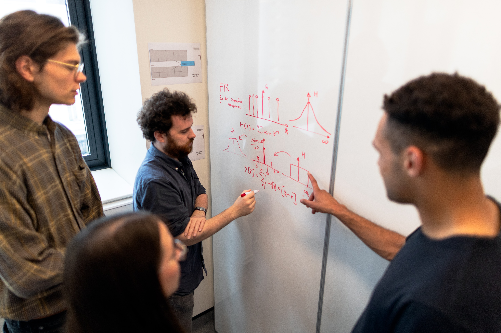

Αποκαλείται και ως ο πατέρας της Βαθιάς μάθησης (deep learning)
στο τομέα της επιστήμης δεδομένων. Είναι γνωστός για τις εργασίες του
στα νευρωνικά δίκτυα και την τεχνητή νοημοσύνη.
Jeff Hammerbacher
Jeff Hammerbacher.
Ο συν-ιδρυτής του όρου "Data Science". Ανέπτυξε μεθόδους και τεχνικές για την εύρεση, αποθήκευση και ανάλυση
των δεδομένων.Είναι συν-ιδρυτής της Cloudera και έχει διδάξει στο Icahn School of Medicine.
Dhanurjay Patil
Dhanurjay Patil.
Είναι συν-ιδρυτής του όρου "Data Science" (μαζί με τον Jeff Hammerbacher). Είναι
ανώτερος σύμβουλος σε πολλές μεγάλες εταιρίες,όπως LinkedIn, Skype, Salesforce κτλ.
Alex “Sandy” Pentland
Alex "Sandy" Pentland.
Θεωρείται ως ένας από τους 7 πιο ισχυρούς επιστήμονες δεδομένων στο κόσμο.
Ίδρυσε και ηγείται ενός προγράμματος του ΜΙΤ για την υπολογιστική κοινωνική επιστήμη
χρησιμοποιώντας Big Data και τεχνητή νοημοσύνη.
Λίγα λόγια
Η επιστήμη των δεδομένων είναι ένας διεπιστημονικός κλάδος που αποσκοπεί στην εξαγωγή συμπερασμάτων και γνώσης από δεδομένα
(δομημένα ή αδόμητα) και να τα εφαρμόσει σε μια σειρά από εφαρμογές.Χρησιμοποιεί τεχνικές στατιστικής,
πληροφορικής και ανάλυσης δεδομένων για να πετύχει αυτό το σκοπό.
Ασχολίες
Η κύρια ασχολία ενός επιστήμονα δεδομένων, όπως προαναφέραμε, είναι να συγκεντρώνει και να αναλύει δεδομένα.
Η διαδικασία αυτή περιέχει μια σειρά βημάτων:
Προετοιμασία με τη δημιουργία των κατάλληλων ερωτήσεων
Συγκέντρωση των δεδομένων
Καθαρισμός των δεδομένων
Αποθήκευση των δεδομένων
Αρχική ανάλυση των δεδομένων
Επιλογή ενός (ή περισσότερων) αλγορίθμων
Εφαρμογή των τεχνικών/ αλγορίθμων
Βελτίωση των αποτελεσμάτων
Παρουσίαση των τελικών αποτελεσμάτων
Μικρές αλλαγές - βελτιώσεις (αν χρειαστούν)
Τεχνικές
Λογιστική Παλινδρόμηση
Γραμμική Παλινδρόμηση
Clustering
Μηχανική Μάθηση
Δέντρα αποφάσεων
...Η άλλη πλευρά του νομίσματος
Σίγουρα κάθε επάγγελμα μαζί με τα θετικά , ενέχει και κάποια αρνητικά στοιχεία. Οι επιστήμονες δεδομένων δουλεύουν σε ένα
‘αγχωτικό’ περιβάλλον,είτε δουλεύουν μόνοι τους είτε σε κάποια ομάδα.Για να εκπληρώσουν τους στόχους της δουλειάς τους,
ενδεχομένως θα χρειαστεί να δουλεύουν συχνά πολλές ώρες. Για παράδειγμα,όταν έχουν να ολοκληρώσουν ένα μεγάλο
project, με τις προσδοκίες να είναι υψηλές, οι υπερωρίες είναι ένα συνηθισμένο φαινόμενο.

Η συνεργασία στο χώρο της επιστήμης δεδομένων είναι πάντα απαραίτητη.